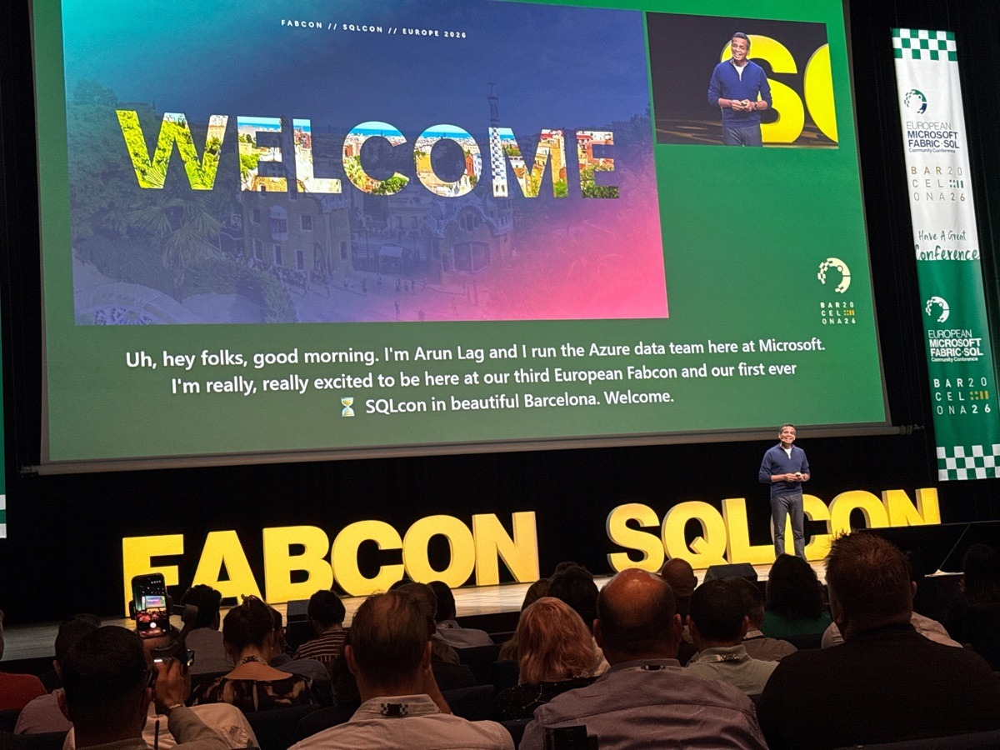
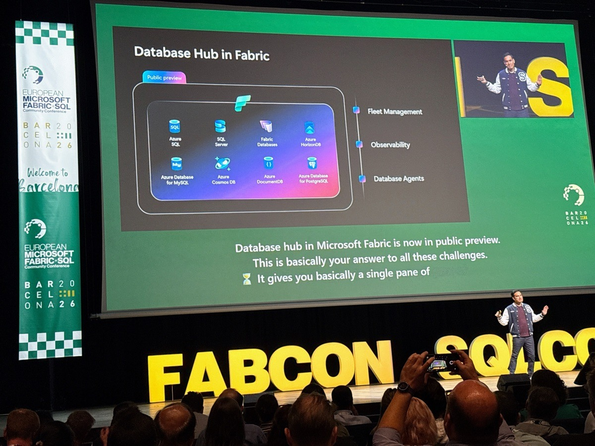
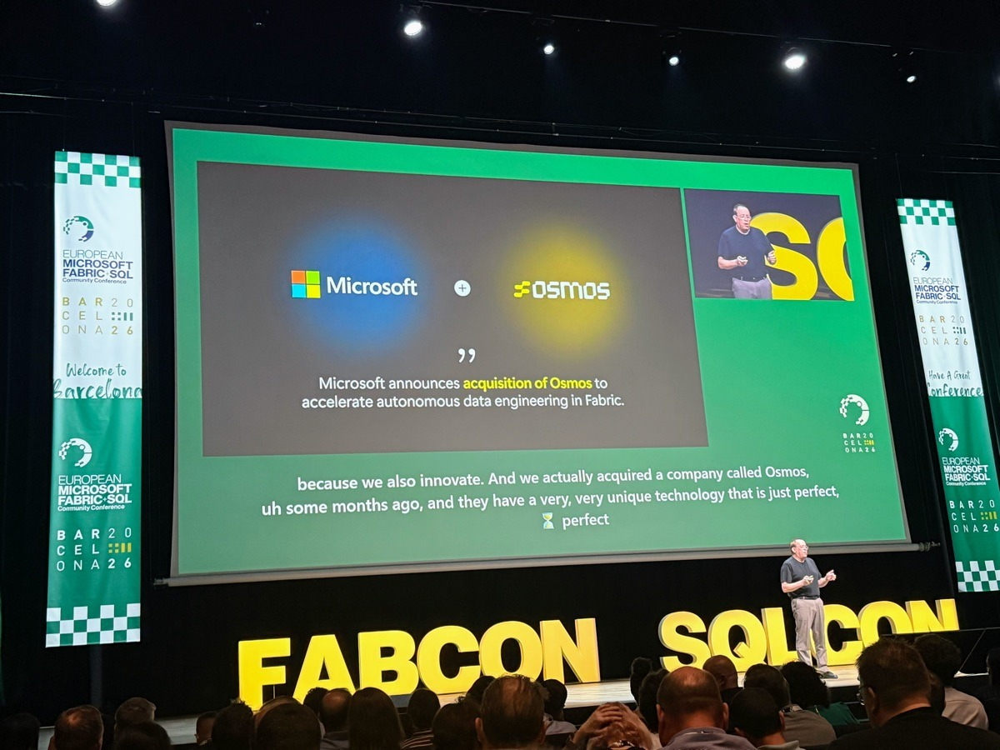
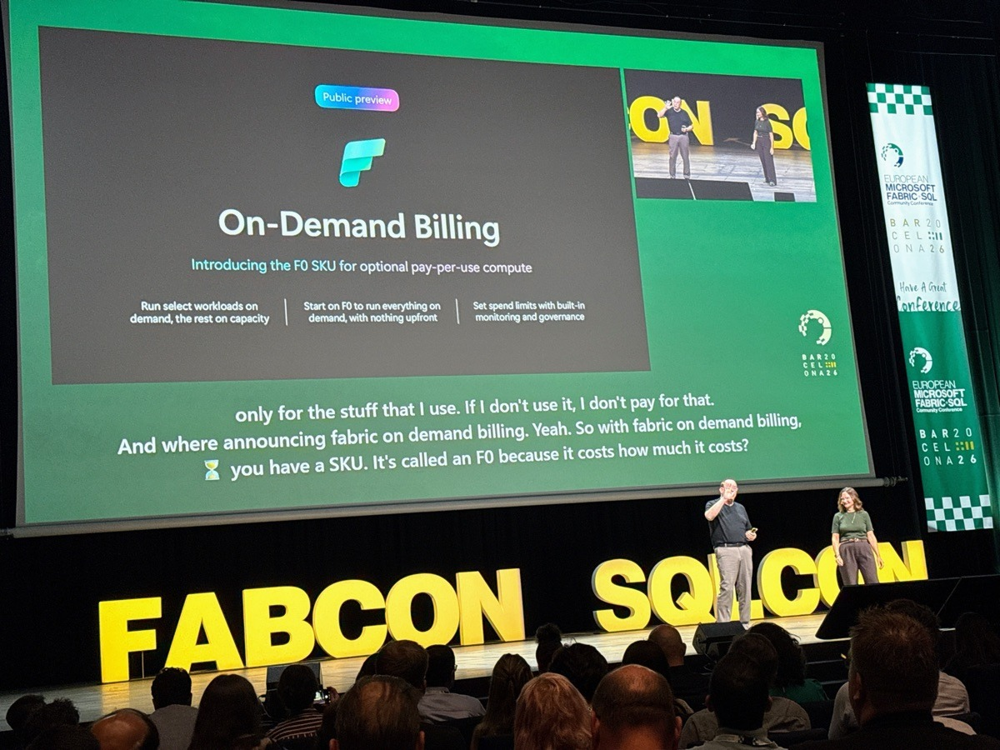

Straight from the keynote. Four of these topics get their own slides today.






Door 1: Copilot Chat queries a semantic model through Fabric IQ on the user's behalf.
We ask a business question in Copilot Chat, and the answer comes from a semantic model we control. No extra charge for AI tokens.
In practice: queries from the chat still use our capacity. There's just no separate bill for tokens.
Limit: the answer is only as good as the descriptions and synonyms in the model. The “code experience” version goes to the Frontier program first.
Policies (allow only), catalog Govern, and observability: three admin screens.
Scope: tenant or capacity. It's an allow list only: the only effect is Allow, and there's no Deny. Conditions: workspace, groups, sensitivity labels, recipient domain, item type.
One screen for the admin: label coverage, DLP results, tenant settings, recommended actions.
The data refreshes once a day. The view doesn't cover tables inside items.

The new Monitor hub: run history and success rate for every job. Plus workspace monitoring in an eventhouse and Activator alerts.
Four tenant settings to check, each with a QR code to Learn.
- 1
Microsoft 365 admin center, Copilot settings, “Fabric data in Microsoft Copilot”. Let's check who has access.
- 2
Let's check the AI setting on semantic models with HR and finance data. It doesn't carry over to chained models.
- 3
Let's check the tenant settings that let AI process data outside the capacity's region and geography.
- 4
Let's turn on outbound access protection for workspaces with sensitive data.
![QR code: https://learn.microsoft.com/microsoft-365/copilot/copilot-powerbi-copilot-chat](data:image/svg+xml;charset=utf-8,%3Csvg%20xmlns%3D%27http%3A%2F%2Fwww.w3.org%2F2000%2Fsvg%27%20width%3D%27164%27%20height%3D%27164%27%20class%3D%27segno%27%3E%3Cg%20transform%3D%27scale%284%29%27%3E%3Cpath%20fill%3D%27%23fff%27%20d%3D%27M0%200h41v41h-41z%27%2F%3E%3Cpath%20class%3D%27qrline%27%20stroke%3D%27%2307101e%27%20d%3D%27M2%202.5h7m2%200h1m1%200h1m5%200h2m2%200h2m7%200h7m-37%201h1m5%200h1m1%200h1m5%200h5m2%200h1m6%200h1m1%200h1m5%200h1m-37%201h1m1%200h3m1%200h1m1%200h1m1%200h2m9%200h4m1%200h3m1%200h1m1%200h3m1%200h1m-37%201h1m1%200h3m1%200h1m1%200h1m2%200h1m3%200h3m1%200h1m1%200h1m2%200h2m1%200h2m1%200h1m1%200h3m1%200h1m-37%201h1m1%200h3m1%200h1m3%200h1m1%200h1m5%200h3m2%200h1m4%200h1m1%200h1m1%200h3m1%200h1m-37%201h1m5%200h1m3%200h2m2%200h1m1%200h1m1%200h1m1%200h3m1%200h1m3%200h1m1%200h1m5%200h1m-37%201h7m1%200h1m1%200h1m1%200h1m1%200h1m1%200h1m1%200h1m1%200h1m1%200h1m1%200h1m1%200h1m1%200h1m1%200h7m-29%201h4m3%200h2m2%200h2m1%200h2m4%200h1m-29%201h1m5%200h1m1%200h1m1%200h1m1%200h1m1%200h2m1%200h1m1%200h1m2%200h5m2%200h2m2%200h3m-34%201h3m3%200h1m2%200h4m2%200h1m1%200h1m1%200h1m1%200h1m2%200h3m2%200h2m1%200h2m-36%201h3m1%200h3m5%200h1m4%200h1m2%200h1m1%200h1m2%200h1m1%200h1m1%200h1m1%200h3m1%200h2m-37%201h1m2%200h3m1%200h4m2%200h1m1%200h2m2%200h1m2%200h1m3%200h1m1%200h1m1%200h1m2%200h1m2%200h1m-36%201h3m2%200h2m3%200h1m2%200h1m1%200h1m2%200h2m3%200h1m2%200h2m1%200h2m1%200h1m2%200h1m-36%201h1m1%200h1m1%200h1m6%200h2m1%200h1m2%200h3m2%200h6m2%200h1m1%200h1m1%200h1m-36%201h4m2%200h2m1%200h1m1%200h3m1%200h2m4%200h1m2%200h4m1%200h1m1%200h3m1%200h2m-37%201h4m1%200h1m3%200h3m6%200h3m1%200h1m4%200h1m1%200h1m1%200h1m1%200h3m-36%201h2m1%200h5m1%200h3m1%200h1m1%200h2m1%200h1m3%200h1m1%200h3m1%200h3m1%200h1m1%200h2m-36%201h1m4%200h1m1%200h2m1%200h2m1%200h1m4%200h4m1%200h2m1%200h4m1%200h1m2%200h2m-36%201h1m1%200h6m3%200h5m3%200h1m1%200h1m1%200h1m2%200h2m2%200h1m3%200h1m1%200h1m-35%201h4m3%200h1m4%200h1m3%200h1m1%200h1m1%200h1m1%200h1m2%200h7m2%200h1m-31%201h2m3%200h7m1%200h2m2%200h1m1%200h2m2%200h2m1%200h3m-34%201h5m1%200h1m1%200h1m1%200h6m2%200h1m1%200h3m2%200h3m3%200h1m1%200h1m-35%201h2m4%200h1m1%200h1m2%200h5m2%200h1m1%200h2m2%200h4m2%200h4m1%200h2m-37%201h2m3%200h1m7%200h1m1%200h2m1%200h2m2%200h2m2%200h3m1%200h4m1%200h1m-36%201h1m5%200h2m2%200h1m2%200h1m1%200h6m2%200h2m3%200h1m1%200h2m3%200h2m-37%201h1m1%200h4m1%200h3m6%200h1m1%200h2m1%200h1m1%200h1m1%200h1m1%200h2m4%200h2m-35%201h1m5%200h2m1%200h1m1%200h2m9%200h1m1%200h4m2%200h1m2%200h1m1%200h2m-37%201h1m1%200h3m2%200h2m1%200h1m2%200h1m1%200h1m2%200h1m4%200h2m4%200h6m-35%201h1m1%200h2m1%200h2m1%200h3m2%200h2m1%200h3m3%200h1m1%200h3m1%200h8m-28%201h1m1%200h2m3%200h1m1%200h5m1%200h1m2%200h1m1%200h1m3%200h1m-33%201h7m2%200h3m2%200h2m3%200h1m1%200h1m1%200h1m1%200h1m2%200h1m1%200h1m1%200h1m3%200h1m-37%201h1m5%200h1m2%200h2m2%200h1m1%200h1m1%200h2m4%200h1m2%200h3m3%200h1m2%200h1m-36%201h1m1%200h3m1%200h1m3%200h2m1%200h4m2%200h2m1%200h11m1%200h2m-36%201h1m1%200h3m1%200h1m3%200h2m4%200h4m1%200h3m5%200h2m2%200h1m2%200h1m-37%201h1m1%200h3m1%200h1m2%200h3m3%200h2m3%200h3m1%200h2m1%200h1m1%200h1m4%200h3m-37%201h1m5%200h1m6%200h2m4%200h2m1%200h3m1%200h1m1%200h1m3%200h2m2%200h1m-37%201h7m1%200h1m1%200h3m1%200h2m2%200h1m1%200h1m2%200h2m3%200h1m1%200h2m4%200h1%27%2F%3E%3C%2Fg%3E%3C%2Fsvg%3E)
![QR code: https://learn.microsoft.com/power-bi/create-reports/copilot-semantic-models](data:image/svg+xml;charset=utf-8,%3Csvg%20xmlns%3D%27http%3A%2F%2Fwww.w3.org%2F2000%2Fsvg%27%20width%3D%27164%27%20height%3D%27164%27%20class%3D%27segno%27%3E%3Cg%20transform%3D%27scale%284%29%27%3E%3Cpath%20fill%3D%27%23fff%27%20d%3D%27M0%200h41v41h-41z%27%2F%3E%3Cpath%20class%3D%27qrline%27%20stroke%3D%27%2307101e%27%20d%3D%27M2%202.5h7m2%200h4m4%200h2m1%200h1m1%200h2m1%200h1m1%200h1m2%200h7m-37%201h1m5%200h1m8%200h1m1%200h2m3%200h3m2%200h1m2%200h1m5%200h1m-37%201h1m1%200h3m1%200h1m3%200h1m1%200h2m1%200h1m1%200h1m5%200h2m1%200h2m2%200h1m1%200h3m1%200h1m-37%201h1m1%200h3m1%200h1m2%200h2m1%200h1m3%200h1m1%200h2m2%200h1m3%200h1m3%200h1m1%200h3m1%200h1m-37%201h1m1%200h3m1%200h1m2%200h1m1%200h2m1%200h5m1%200h1m2%200h1m1%200h4m1%200h1m1%200h3m1%200h1m-37%201h1m5%200h1m1%200h1m1%200h2m2%200h1m2%200h4m4%200h1m1%200h2m1%200h1m5%200h1m-37%201h7m1%200h1m1%200h1m1%200h1m1%200h1m1%200h1m1%200h1m1%200h1m1%200h1m1%200h1m1%200h1m1%200h1m1%200h7m-28%201h2m1%200h1m1%200h3m2%200h1m1%200h1m2%200h1m2%200h1m-28%201h1m2%200h1m1%200h2m1%200h2m3%200h1m1%200h1m1%200h1m3%200h2m1%200h2m1%200h3m1%200h1m-32%201h1m1%200h1m1%200h2m1%200h2m1%200h1m1%200h4m1%200h1m1%200h1m4%200h2m2%200h4m1%200h1m2%200h1m-37%201h1m3%200h1m1%200h2m3%200h1m1%200h1m2%200h4m1%200h2m1%200h1m1%200h1m2%200h1m4%200h3m-37%201h3m1%200h2m2%200h2m3%200h1m1%200h1m4%200h3m1%200h2m1%200h2m2%200h2m-33%201h2m3%200h2m1%200h2m7%200h1m3%200h1m2%200h2m1%200h4m4%200h2m-37%201h1m1%200h1m1%200h1m4%200h3m5%200h1m1%200h2m1%200h1m2%200h2m2%200h3m2%200h1m1%200h1m-37%201h1m3%200h1m1%200h2m2%200h1m3%200h1m2%200h2m1%200h1m2%200h2m1%200h1m1%200h1m2%200h2m1%200h1m1%200h1m-35%201h2m1%200h1m4%200h3m2%200h1m1%200h10m1%200h1m1%200h1m1%200h1m-33%201h3m2%200h2m1%200h1m1%200h1m3%200h1m3%200h2m1%200h2m4%200h1m1%200h2m2%200h3m-36%201h1m1%200h4m2%200h5m2%200h4m4%200h3m2%200h1m1%200h1m1%200h1m2%200h2m-37%201h2m2%200h1m1%200h1m1%200h1m2%200h1m3%200h2m1%200h1m1%200h1m3%200h3m2%200h2m1%200h5m-35%201h3m3%200h1m2%200h3m3%200h2m1%200h2m2%200h1m2%200h2m2%200h1m2%200h2m-36%201h1m1%200h1m1%200h4m2%200h3m1%200h3m1%200h2m1%200h2m2%200h4m1%200h1m1%200h2m1%200h1m-33%201h3m1%200h8m1%200h1m3%200h1m3%200h2m3%200h3m1%200h1m1%200h2m-36%201h2m3%200h1m2%200h2m1%200h1m1%200h1m1%200h2m1%200h1m2%200h1m1%200h1m1%200h1m3%200h1m5%200h1m-36%201h2m1%200h1m4%200h1m2%200h6m3%200h5m2%200h3m4%200h1m-36%201h5m1%200h1m3%200h3m1%200h1m5%200h2m2%200h2m1%200h5m1%200h1m1%200h2m-36%201h5m1%200h4m1%200h1m1%200h3m2%200h2m1%200h1m1%200h2m3%200h3m1%200h4m-37%201h1m1%200h1m3%200h1m1%200h3m2%200h1m6%200h2m1%200h1m1%200h2m1%200h3m1%200h1m1%200h1m1%200h1m-36%201h4m5%200h2m3%200h1m1%200h7m1%200h3m3%200h1m4%200h1m-37%201h2m1%200h1m2%200h1m1%200h2m1%200h4m2%200h1m1%200h1m1%200h2m1%200h1m3%200h5m1%200h1m-27%201h1m1%200h1m1%200h1m3%200h1m5%200h4m1%200h2m3%200h2m2%200h1m-37%201h7m3%200h1m3%200h1m1%200h1m1%200h1m2%200h1m5%200h2m1%200h1m1%200h2m1%200h2m-37%201h1m5%200h1m1%200h1m1%200h5m1%200h6m2%200h1m1%200h1m1%200h1m3%200h4m-36%201h1m1%200h3m1%200h1m3%200h2m1%200h2m1%200h4m1%200h1m2%200h3m1%200h6m2%200h1m-37%201h1m1%200h3m1%200h1m1%200h3m1%200h1m2%200h4m1%200h2m2%200h2m1%200h2m2%200h2m1%200h2m-36%201h1m1%200h3m1%200h1m3%200h1m1%200h4m1%200h4m5%200h1m2%200h1m1%200h6m-37%201h1m5%200h1m2%200h1m4%200h1m1%200h1m1%200h2m1%200h1m2%200h2m2%200h4m-32%201h7m1%200h1m2%200h3m1%200h1m1%200h1m2%200h2m1%200h3m1%200h3m3%200h1m1%200h2%27%2F%3E%3C%2Fg%3E%3C%2Fsvg%3E)
![QR code: https://learn.microsoft.com/fabric/admin/service-admin-portal-copilot](data:image/svg+xml;charset=utf-8,%3Csvg%20xmlns%3D%27http%3A%2F%2Fwww.w3.org%2F2000%2Fsvg%27%20width%3D%27180%27%20height%3D%27180%27%20class%3D%27segno%27%3E%3Cg%20transform%3D%27scale%284%29%27%3E%3Cpath%20fill%3D%27%23fff%27%20d%3D%27M0%200h45v45h-45z%27%2F%3E%3Cpath%20class%3D%27qrline%27%20stroke%3D%27%2307101e%27%20d%3D%27M4%204.5h7m1%200h1m4%200h1m5%200h2m2%200h1m3%200h2m1%200h7m-37%201h1m5%200h1m2%200h1m4%200h1m2%200h3m1%200h1m2%200h3m3%200h1m5%200h1m-37%201h1m1%200h3m1%200h1m4%200h1m2%200h1m2%200h2m2%200h1m1%200h2m1%200h1m1%200h1m1%200h1m1%200h3m1%200h1m-37%201h1m1%200h3m1%200h1m1%200h2m1%200h1m1%200h1m1%200h1m9%200h4m1%200h1m1%200h3m1%200h1m-37%201h1m1%200h3m1%200h1m1%200h1m1%200h1m1%200h1m3%200h3m2%200h1m1%200h1m1%200h4m1%200h1m1%200h3m1%200h1m-37%201h1m5%200h1m1%200h1m2%200h2m3%200h2m1%200h1m1%200h2m1%200h2m2%200h1m1%200h1m5%200h1m-37%201h7m1%200h1m1%200h1m1%200h1m1%200h1m1%200h1m1%200h1m1%200h1m1%200h1m1%200h1m1%200h1m1%200h1m1%200h7m-29%201h7m1%200h1m4%200h1m2%200h1m2%200h1m-28%201h1m3%200h1m1%200h3m2%200h2m1%200h3m3%200h5m2%200h7m2%200h1m-35%201h2m3%200h1m1%200h4m1%200h1m2%200h3m1%200h3m1%200h4m3%200h2m1%200h1m-33%201h1m1%200h5m1%200h1m1%200h1m1%200h1m2%200h2m3%200h3m1%200h1m2%200h1m2%200h1m-33%201h5m3%200h1m5%200h7m1%200h1m2%200h1m2%200h1m1%200h1m2%200h2m-36%201h2m1%200h4m2%200h2m1%200h1m1%200h1m1%200h2m2%200h5m2%200h1m1%200h3m2%200h3m-37%201h1m1%200h1m5%200h1m1%200h7m1%200h1m4%200h3m1%200h2m3%200h2m1%200h1m-35%201h1m2%200h5m1%200h3m2%200h1m1%200h1m3%200h1m1%200h1m3%200h2m1%200h5m-34%201h5m2%200h1m2%200h3m3%200h3m1%200h4m1%200h1m4%200h2m1%200h3m-33%201h1m1%200h1m1%200h1m1%200h2m2%200h2m2%200h2m4%200h1m2%200h1m1%200h3m1%200h2m1%200h1m-36%201h1m1%200h1m1%200h1m1%200h1m1%200h6m1%200h1m2%200h3m1%200h1m1%200h4m3%200h1m1%200h2m-36%201h2m2%200h8m1%200h2m1%200h2m2%200h2m1%200h1m1%200h1m1%200h2m2%200h1m2%200h1m-34%201h1m1%200h2m2%200h1m1%200h1m1%200h2m1%200h1m2%200h2m2%200h1m1%200h1m3%200h2m5%200h2m-35%201h1m2%200h6m1%200h1m1%200h1m1%200h1m1%200h1m1%200h1m1%200h1m7%200h3m2%200h1m-31%201h2m2%200h6m1%200h1m1%200h2m4%200h1m2%200h2m3%200h2m2%200h1m-35%201h1m2%200h1m1%200h2m3%200h2m1%200h3m1%200h1m2%200h3m2%200h9m-35%201h2m3%200h1m1%200h1m2%200h1m8%200h1m1%200h2m1%200h1m6%200h2m1%200h1m-30%201h4m6%200h2m2%200h2m5%200h6m1%200h4m-37%201h2m3%200h1m2%200h1m1%200h2m1%200h2m3%200h2m1%200h1m1%200h1m2%200h3m3%200h1m-30%201h1m1%200h2m1%200h3m1%200h4m1%200h3m3%200h5m1%200h1m1%200h1m-30%201h1m2%200h1m2%200h2m2%200h1m1%200h4m1%200h3m2%200h1m1%200h2m3%200h2m1%200h1m-35%201h2m4%200h2m2%200h1m2%200h2m2%200h1m2%200h5m2%200h6m1%200h3m-29%201h1m2%200h3m1%200h2m1%200h1m2%200h1m1%200h1m4%200h1m3%200h1m-33%201h7m1%200h2m2%200h2m1%200h1m1%200h1m2%200h1m2%200h2m1%200h1m1%200h1m1%200h1m1%200h1m-33%201h1m5%200h1m5%200h2m1%200h4m3%200h1m1%200h1m1%200h1m1%200h1m3%200h3m1%200h1m-37%201h1m1%200h3m1%200h1m1%200h1m3%200h1m2%200h1m2%200h2m2%200h3m3%200h7m1%200h1m-37%201h1m1%200h3m1%200h1m2%200h2m3%200h1m1%200h2m1%200h2m2%200h1m1%200h2m1%200h4m1%200h1m2%200h1m-37%201h1m1%200h3m1%200h1m4%200h2m1%200h1m1%200h3m1%200h1m2%200h3m1%200h2m1%200h1m3%200h1m-35%201h1m5%200h1m5%200h2m3%200h2m2%200h2m3%200h2m2%200h1m1%200h4m-36%201h7m1%200h1m2%200h2m1%200h2m1%200h1m1%200h4m1%200h1m6%200h1m2%200h3%27%2F%3E%3C%2Fg%3E%3C%2Fsvg%3E)
![QR code: https://learn.microsoft.com/fabric/security/workspace-outbound-access-protection-data-agent](data:image/svg+xml;charset=utf-8,%3Csvg%20xmlns%3D%27http%3A%2F%2Fwww.w3.org%2F2000%2Fsvg%27%20width%3D%27180%27%20height%3D%27180%27%20class%3D%27segno%27%3E%3Cg%20transform%3D%27scale%284%29%27%3E%3Cpath%20fill%3D%27%23fff%27%20d%3D%27M0%200h45v45h-45z%27%2F%3E%3Cpath%20class%3D%27qrline%27%20stroke%3D%27%2307101e%27%20d%3D%27M2%202.5h7m1%200h1m1%200h1m2%200h1m1%200h1m2%200h3m2%200h1m2%200h1m1%200h1m1%200h2m2%200h7m-41%201h1m5%200h1m1%200h3m1%200h1m2%200h3m2%200h4m2%200h1m1%200h3m1%200h1m1%200h1m5%200h1m-41%201h1m1%200h3m1%200h1m2%200h1m3%200h2m1%200h1m1%200h6m1%200h2m3%200h3m1%200h1m1%200h3m1%200h1m-41%201h1m1%200h3m1%200h1m1%200h7m1%200h1m1%200h1m2%200h2m1%200h1m2%200h1m1%200h1m2%200h1m1%200h1m1%200h3m1%200h1m-41%201h1m1%200h3m1%200h1m3%200h1m1%200h1m5%200h2m1%200h1m2%200h2m1%200h2m2%200h1m2%200h1m1%200h3m1%200h1m-41%201h1m5%200h1m2%200h1m1%200h4m2%200h3m1%200h1m2%200h1m1%200h1m1%200h1m1%200h3m1%200h1m5%200h1m-41%201h7m1%200h1m1%200h1m1%200h1m1%200h1m1%200h1m1%200h1m1%200h1m1%200h1m1%200h1m1%200h1m1%200h1m1%200h1m1%200h1m1%200h7m-33%201h1m4%200h1m1%200h1m1%200h1m2%200h1m1%200h1m1%200h1m1%200h2m1%200h1m1%200h1m-32%201h1m1%200h2m1%200h3m1%200h2m1%200h8m1%200h1m4%200h1m1%200h3m3%200h1m2%200h1m1%200h2m-40%201h1m1%200h2m6%200h1m2%200h1m3%200h2m2%200h2m1%200h1m4%200h7m1%200h3m-40%201h1m4%200h2m1%200h2m1%200h1m2%200h3m2%200h4m2%200h1m8%200h2m1%200h2m-39%201h3m1%200h1m2%200h6m1%200h2m1%200h3m2%200h1m1%200h3m2%200h1m1%200h3m4%200h2m-41%201h5m1%200h1m1%200h2m4%200h4m4%200h1m2%200h2m2%200h1m1%200h1m1%200h1m1%200h1m1%200h2m1%200h1m-40%201h1m3%200h1m1%200h4m1%200h3m1%200h1m4%200h3m4%200h1m2%200h1m2%200h1m2%200h1m2%200h1m-40%201h1m1%200h1m2%200h1m4%200h1m9%200h1m2%200h1m2%200h2m1%200h3m1%200h1m1%200h1m1%200h3m-40%201h1m5%200h1m2%200h3m3%200h1m2%200h4m1%200h1m1%200h1m1%200h1m2%200h2m1%200h1m1%200h2m-37%201h2m1%200h4m1%200h2m2%200h2m3%200h2m1%200h5m1%200h1m2%200h1m1%200h1m3%200h1m2%200h2m-41%201h1m3%200h1m2%200h2m1%200h2m3%200h3m2%200h1m2%200h2m1%200h2m1%200h1m2%200h2m1%200h1m2%200h1m-38%201h1m3%200h2m1%200h1m1%200h1m1%200h3m2%200h1m2%200h2m2%200h6m3%200h1m2%200h4m-40%201h1m2%200h1m1%200h1m1%200h3m1%200h2m1%200h1m4%200h2m1%200h2m1%200h3m1%200h1m1%200h1m2%200h2m1%200h3m-39%201h1m2%200h1m1%200h3m3%200h2m4%200h3m1%200h1m1%200h3m2%200h2m2%200h2m1%200h1m1%200h2m-39%201h4m3%200h1m1%200h2m1%200h1m1%200h2m1%200h6m1%200h1m2%200h1m2%200h1m1%200h5m1%200h2m-41%201h1m1%200h1m2%200h2m3%200h3m8%200h1m1%200h2m3%200h3m2%200h3m2%200h2m-39%201h1m1%200h2m3%200h1m2%200h3m1%200h2m1%200h1m4%200h4m3%200h1m2%200h1m1%200h1m3%200h1m-40%201h2m2%200h4m1%200h1m2%200h1m1%200h2m1%200h1m2%200h1m1%200h2m1%200h3m1%200h1m8%200h3m-38%201h1m3%200h6m2%200h1m1%200h1m1%200h1m4%200h1m1%200h4m1%200h4m2%200h2m1%200h1m-41%201h1m1%200h2m1%200h2m2%200h2m2%200h1m1%200h3m1%200h1m1%200h2m1%200h3m1%200h1m1%200h4m3%200h1m2%200h1m-40%201h3m4%200h2m2%200h3m4%200h3m1%200h2m6%200h2m2%200h3m1%200h2m-41%201h5m1%200h1m3%200h2m2%200h3m1%200h1m2%200h3m1%200h1m4%200h4m1%200h3m1%200h2m-40%201h3m1%200h1m2%200h4m1%200h1m3%200h1m1%200h1m2%200h1m1%200h3m1%200h1m3%200h1m2%200h1m-36%201h1m4%200h4m2%200h2m1%200h2m1%200h1m2%200h6m1%200h1m2%200h1m1%200h5m1%200h2m-37%201h2m3%200h2m3%200h1m1%200h4m1%200h1m3%200h1m4%200h2m1%200h1m1%200h2m1%200h3m-39%201h3m1%200h2m5%200h1m4%200h3m1%200h1m1%200h2m3%200h13m-33%201h4m3%200h2m1%200h3m2%200h1m4%200h1m1%200h1m1%200h1m3%200h2m1%200h2m-41%201h7m1%200h2m3%200h5m3%200h4m1%200h1m1%200h5m1%200h1m1%200h4m-40%201h1m5%200h1m1%200h3m1%200h2m2%200h1m1%200h5m1%200h5m3%200h1m3%200h1m2%200h1m-40%201h1m1%200h3m1%200h1m2%200h1m2%200h1m5%200h1m1%200h5m2%200h2m1%200h1m1%200h7m1%200h1m-41%201h1m1%200h3m1%200h1m1%200h1m3%200h1m1%200h1m3%200h2m1%200h1m3%200h1m1%200h3m1%200h2m3%200h1m1%200h2m-40%201h1m1%200h3m1%200h1m1%200h5m2%200h3m1%200h3m2%200h2m9%200h1m3%200h2m-41%201h1m5%200h1m2%200h1m2%200h1m1%200h2m2%200h2m1%200h2m1%200h1m1%200h1m5%200h3m1%200h2m1%200h1m-40%201h7m1%200h1m2%200h1m3%200h3m1%200h4m2%200h1m2%200h1m1%200h4m3%200h1m1%200h1%27%2F%3E%3C%2Fg%3E%3C%2Fsvg%3E)
Fabric has become a platform for agents.
Have our settings kept up?
Questions
![QR code: https://github.com/ekote/fabcon-barcelona-2026-recap](data:image/svg+xml;charset=utf-8,%3Csvg%20xmlns%3D%27http%3A%2F%2Fwww.w3.org%2F2000%2Fsvg%27%20width%3D%27164%27%20height%3D%27164%27%20class%3D%27segno%27%3E%3Cg%20transform%3D%27scale%284%29%27%3E%3Cpath%20fill%3D%27%23fff%27%20d%3D%27M0%200h41v41h-41z%27%2F%3E%3Cpath%20class%3D%27qrline%27%20stroke%3D%27%2307101e%27%20d%3D%27M4%204.5h7m2%200h1m6%200h1m1%200h4m1%200h1m2%200h7m-33%201h1m5%200h1m2%200h1m2%200h1m2%200h2m1%200h1m1%200h1m5%200h1m5%200h1m-33%201h1m1%200h3m1%200h1m1%200h3m1%200h1m1%200h1m3%200h2m1%200h1m4%200h1m1%200h3m1%200h1m-33%201h1m1%200h3m1%200h1m1%200h2m2%200h1m2%200h1m2%200h2m6%200h1m1%200h3m1%200h1m-33%201h1m1%200h3m1%200h1m1%200h1m4%200h6m2%200h4m1%200h1m1%200h3m1%200h1m-33%201h1m5%200h1m1%200h1m3%200h3m2%200h1m6%200h1m1%200h1m5%200h1m-33%201h7m1%200h1m1%200h1m1%200h1m1%200h1m1%200h1m1%200h1m1%200h1m1%200h1m1%200h1m1%200h7m-25%201h3m1%200h1m1%200h1m1%200h1m4%200h1m2%200h1m-25%201h1m1%200h5m2%200h2m2%200h2m2%200h1m8%200h5m-30%201h2m4%200h3m1%200h3m2%200h2m1%200h3m1%200h1m2%200h2m1%200h2m1%200h1m-30%201h1m1%200h3m1%200h2m1%200h4m1%200h1m2%200h1m1%200h1m1%200h3m1%200h1m1%200h2m-32%201h1m1%200h1m1%200h1m2%200h2m1%200h1m1%200h2m3%200h2m1%200h2m2%200h3m1%200h3m1%200h1m-33%201h2m3%200h2m2%200h3m2%200h3m3%200h1m2%200h1m1%200h1m1%200h3m-29%201h2m1%200h2m2%200h6m1%200h1m2%200h3m2%200h2m1%200h1m3%200h3m-30%201h1m2%200h3m2%200h2m1%200h3m3%200h1m1%200h1m1%200h4m1%200h3m-29%201h3m8%200h2m2%200h1m2%200h1m1%200h4m1%200h3m-26%201h5m2%200h2m1%200h1m1%200h1m4%200h1m1%200h2m1%200h3m2%200h1m-31%201h2m1%200h1m3%200h2m1%200h2m2%200h1m1%200h3m2%200h1m2%200h2m1%200h2m1%200h1m-32%201h1m2%200h1m1%200h2m1%200h3m3%200h2m1%200h1m1%200h3m1%200h5m1%200h2m-29%201h1m8%200h4m3%200h4m3%200h6m-32%201h3m1%200h4m2%200h4m1%200h1m2%200h2m2%200h1m2%200h1m1%200h3m1%200h2m-33%201h2m5%200h1m5%200h1m1%200h2m2%200h6m1%200h1m3%200h1m1%200h1m-33%201h1m2%200h1m2%200h1m1%200h1m1%200h2m1%200h2m5%200h1m4%200h1m5%200h1m-32%201h1m1%200h2m5%200h3m4%200h1m2%200h1m1%200h2m2%200h2m2%200h2m-31%201h1m2%200h1m1%200h2m1%200h1m1%200h2m1%200h2m2%200h2m3%200h7m2%200h1m-24%201h1m5%200h1m1%200h4m1%200h1m1%200h2m3%200h1m1%200h1m1%200h1m-33%201h7m2%200h1m2%200h1m2%200h1m1%200h1m2%200h1m2%200h2m1%200h1m1%200h1m1%200h1m-31%201h1m5%200h1m1%200h2m6%200h3m1%200h2m1%200h2m3%200h3m1%200h1m-33%201h1m1%200h3m1%200h1m1%200h1m2%200h6m2%200h1m2%200h1m1%200h6m1%200h2m-33%201h1m1%200h3m1%200h1m1%200h1m1%200h2m2%200h2m1%200h4m2%200h3m2%200h1m1%200h3m-33%201h1m1%200h3m1%200h1m1%200h2m1%200h1m3%200h3m2%200h1m1%200h1m3%200h2m1%200h1m-30%201h1m5%200h1m4%200h1m1%200h1m1%200h1m4%200h3m5%200h3m-31%201h7m1%200h3m1%200h1m1%200h2m1%200h1m4%200h1m1%200h2m1%200h1m3%200h1%27%2F%3E%3C%2Fg%3E%3C%2Fsvg%3E) Slides, PDF, and recordingsgithub.com/ekote/fabcon-barcelona-2026-recap
Slides, PDF, and recordingsgithub.com/ekote/fabcon-barcelona-2026-recap
![QR code: https://cloudsonmars.com/careers/](data:image/svg+xml;charset=utf-8,%3Csvg%20xmlns%3D%27http%3A%2F%2Fwww.w3.org%2F2000%2Fsvg%27%20width%3D%27132%27%20height%3D%27132%27%20class%3D%27segno%27%3E%3Cg%20transform%3D%27scale%284%29%27%3E%3Cpath%20fill%3D%27%23fff%27%20d%3D%27M0%200h33v33h-33z%27%2F%3E%3Cpath%20class%3D%27qrline%27%20stroke%3D%27%2307101e%27%20d%3D%27M2%202.5h7m3%200h4m2%200h4m2%200h7m-29%201h1m5%200h1m4%200h5m2%200h1m1%200h1m1%200h1m5%200h1m-29%201h1m1%200h3m1%200h1m2%200h5m2%200h2m1%200h1m2%200h1m1%200h3m1%200h1m-29%201h1m1%200h3m1%200h1m6%200h3m2%200h2m2%200h1m1%200h3m1%200h1m-29%201h1m1%200h3m1%200h1m2%200h2m2%200h2m1%200h3m3%200h1m1%200h3m1%200h1m-29%201h1m5%200h1m1%200h3m1%200h3m3%200h3m1%200h1m5%200h1m-29%201h7m1%200h1m1%200h1m1%200h1m1%200h1m1%200h1m1%200h1m1%200h1m1%200h7m-19%201h1m1%200h1m1%200h1m2%200h4m-21%201h1m2%200h1m1%200h2m1%200h3m4%200h2m1%200h2m1%200h1m1%200h1m-24%201h4m1%200h1m3%200h2m3%200h2m5%200h2m2%200h1m2%200h1m-29%201h2m2%200h3m4%200h2m4%200h1m1%200h1m1%200h1m1%200h5m-28%201h3m1%200h2m1%200h1m1%200h1m1%200h1m2%200h2m2%200h1m1%200h2m1%200h1m2%200h2m-28%201h1m5%200h1m1%200h1m2%200h2m3%200h2m3%200h3m1%200h1m1%200h2m-29%201h1m1%200h4m1%200h3m5%200h3m1%200h2m-21%201h1m1%200h1m1%200h1m1%200h1m3%200h1m1%200h1m5%200h1m3%200h1m2%200h4m-28%201h1m3%200h1m1%200h1m3%200h1m1%200h2m1%200h3m3%200h1m1%200h2m1%200h1m-27%201h1m1%200h2m1%200h1m5%200h4m1%200h1m1%200h1m1%200h1m5%200h1m-27%201h5m3%200h2m10%200h3m1%200h1m2%200h1m-29%201h1m2%200h4m3%200h1m1%200h2m4%200h1m2%200h1m2%200h1m2%200h2m-26%201h1m3%200h2m2%200h1m1%200h1m2%200h3m5%200h1m2%200h2m-29%201h1m5%200h3m3%200h1m1%200h1m5%200h5m1%200h1m-19%201h3m1%200h2m2%200h5m3%200h1m1%200h3m-29%201h7m2%200h1m1%200h1m1%200h2m2%200h2m1%200h1m1%200h1m1%200h1m2%200h1m-28%201h1m5%200h1m1%200h2m1%200h3m6%200h1m3%200h3m-27%201h1m1%200h3m1%200h1m3%200h1m1%200h1m1%200h1m2%200h1m2%200h5m3%200h1m-29%201h1m1%200h3m1%200h1m1%200h1m1%200h1m1%200h1m1%200h1m2%200h1m1%200h1m2%200h6m-28%201h1m1%200h3m1%200h1m3%200h3m4%200h1m1%200h2m3%200h3m1%200h1m-29%201h1m5%200h1m3%200h1m4%200h6m1%200h1m1%200h1m2%200h1m-28%201h7m1%200h2m1%200h2m4%200h1m2%200h1m1%200h1m1%200h2m1%200h1%27%2F%3E%3C%2Fg%3E%3C%2Fsvg%3E)
Projects: data platforms and lakehouses, data modeling and reporting, AI and automation. Microsoft Fabric, Azure, Databricks, Power BI.
We don't do body leasing. We run projects, and staff augmentation happens very, very rarely.